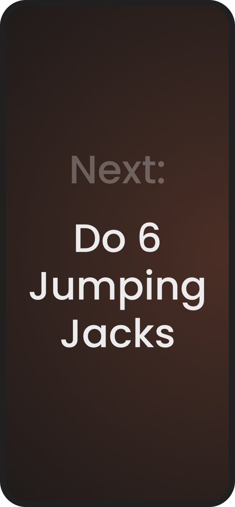
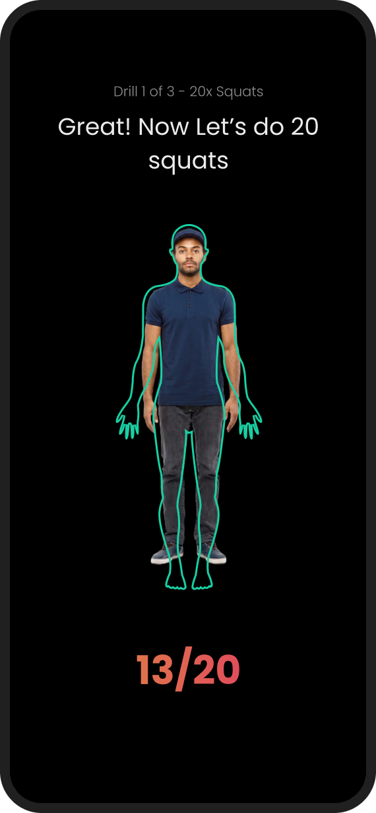

Khiladipro — Website & Mobile App
End-to-end designs for the web and mobile app of a sports-tech startup running a nationwide student olympiad.
🦚 About the project
Khiladipro is a sports-tech startup that lets players use its visual AI to analyse and fine-tune their sports performance.
They were launching a sports olympiad for students during their summer vacations — a way to compete in sports and fitness drills and win prizes from the comfort of their homes, by recording themselves completing fitness drills through the mobile app’s advanced visual AI.
They hired me to design the landing pages, registration flow, and mobile app screens for it. I was responsible for the complete end-to-end designs.

🤷 The Target User
Khiladipro was aiming for two kinds of user groups:
- Primary TG: Young sportsmen interested in building a career in sports
- Secondary TG: Those who once pursued sports seriously and are now looking to return
The olympiad was mainly for the primary group of young sportsmen still in school, but also for hobbyists interested in physical activity during their summer vacations. The olympiad doubled as an acquisition opportunity for this expanded, adjacent, non-serious user base.
🏝️ The Landing Pages
The Olympiad Landing Page
This was the main landing page — the first touchpoint for potential new users. The design objectives were:
- Clarity about the olympiad and rewards
- Clean, minimal, and modern design for all types of users — students, parents, academies
- Easy and intuitive registration flow
I designed this in 3 passes:
1. The low-fidelity pass for the big picture — why a landing page, who it is for, what problems it solves, what success looks like; curation of high-level structure and content.
2. The mid-fidelity pass for the layout and content.
3. And finally the high-fidelity pass for the final polish, which you can see below.


Landing Page for the IPL Growth Initiative
The growth team wanted to run a campaign during the Indian Premier League — the most popular cricket league in the world. Their in-house design team had already designed the app screens, and they enlisted me to design a landing page for it.
The aim was to bank on users’ support for their favourite IPL teams and link it to fitness drills, thereby increasing engagement with the app.

📱 The Mobile App
Onboarding Flow
My first task for the mobile app was to design an onboarding flow, keeping in mind their existing mobile app designs and brand guidelines.
This onboarding flow was meant for first-time users acquired through the olympiad’s marketing — people being introduced to the app and how it works for the very first time. I designed it keeping this in mind.





View the complete & interactive onboarding flow →
Olympiad App Screens
The next big task was designing the app screens for the olympiad. The mobile app is Khiladipro’s main interface. They already had an app — I had to follow its design language with a little wiggle room. There was no established design system.
Before the olympiad starts


View the complete & interactive flow →
After the olympiad starts




🏅 Outcome
The olympiad marketing performed way above what the team had expected. The landing page served as a single source of truth for all the details and the registrations.
I received very positive qualitative feedback for the onboarding and the app screens. The IPL initiative’s registrations included 83% existing users and 17% new users acquired through marketing; since its app screens were designed in-house, retention data for that initiative wasn’t available to me.
“Priyank is a talented designer with great skills. He showed intuitive product thinking. He is very proactive with his contributions and gives a lot of attention to detail. Working with him was a pleasure. I highly recommend him.”Aakash VermaProduct Head, Khiladipro
— Fin. —